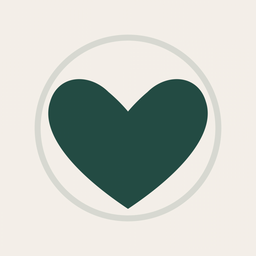
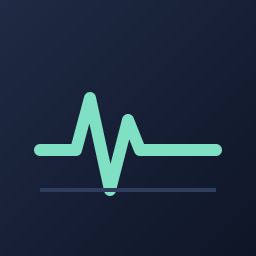
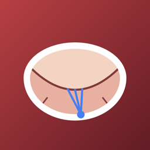

Independent app studio · Montréal
Focused, private apps for cardiac surgeons, residents, patients and families, each built by a practising heart surgeon to solve a problem he met in the operating room, the clinic or at home.

Patient Companion
MCS HemodynamicsNo analytics, advertising or third-party trackers in any app.
Data stays on your device unless a feature needs to sync, and each privacy policy lists exactly what is kept.
Medical content is drawn from cited literature and written by a surgeon who uses it.
Plain-language guides to common heart operations, preparation checklists and a recovery timeline. English and French, fully offline.
A bedtime-routine checklist for kids, with a star-based prize tracker and optional two-phone sync through iCloud.
A surgical case log. Residents log an OR case on their phone in under 30 seconds and follow their progress against program targets, and program directors follow their residents on a web dashboard. Achievements, announced to the program by a dry and slightly dark System, keep everyone logging. No patient identifiers are stored on the server.
A hemodynamics reference for patients on mechanical circulatory support.
Anastomosis, de-airing and trivia mini-games with a program leaderboard. Working title.

Steady Hand Software is the independent studio of David Drullinsky, MD, FRCSC, an adult cardiac surgeon in Montréal.
Questions, corrections or problems with any app:
support@steadyhandsoftware.com